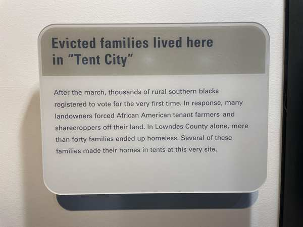
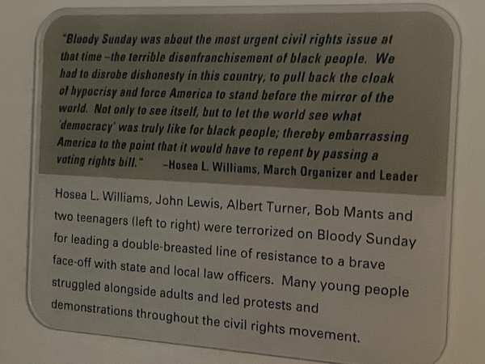
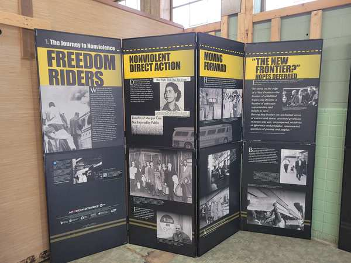
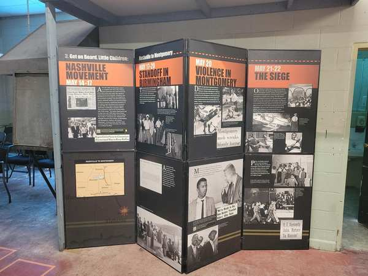

57 interpretive exhibits about civil rights and racial justice have been flagged or removed from 23 parks — including Selma, Freedom Riders, and the Medgar Evers home.
57 interpretive exhibits about civil rights and racial justice have been flagged across 23 national parks and historic sites. Of these, 4 have been confirmed removed. The censorship targets some of the most important civil rights sites in America — places that were designated as national landmarks specifically to preserve the memory of the movement.
The Selma to Montgomery National Historic Trail in Alabama, which commemorates the 1965 voting rights marches, has 15 entries flagged — more than any other site in this category. At Cane River Creole National Historical Park in Louisiana, 13 entries about the intersection of race, slavery, and civil rights in the Creole South have been flagged. The Medgar and Myrlie Evers Home National Monument in Mississippi, honoring the slain civil rights leader, has had 3 entries confirmed removed.
At the Freedom Riders National Monument in Alabama, four entries documenting the 1961 Freedom Rides — when interracial groups rode interstate buses to challenge segregation — have been flagged for review.
These sites exist because of the civil rights movement. Congress designated them as national parks and monuments to ensure that the struggle for equality would never be forgotten. Censoring their interpretive materials undermines the very purpose for which they were created.
Interactive map filtered to civil rights and racial justice entries. Click any pin for details.


The Selma to Montgomery trail commemorates the 1965 voting rights marches that led directly to the passage of the Voting Rights Act. Fifteen interpretive entries have been flagged for revision or removal — more than any other civil rights site. The exhibits document the violence marchers faced on Bloody Sunday and the retaliation against Black families who registered to vote. View all 15 entries on map →
Photos from Missing Park History Censorship Tracker
On March 7, 1965, approximately 600 marchers led by John Lewis and Hosea Williams crossed the Edmund Pettus Bridge in Selma, Alabama. State troopers attacked them with batons, tear gas, and whips. Lewis suffered a skull fracture. Seventeen marchers were hospitalized. The footage, broadcast nationally, shocked the country. Two weeks later, Martin Luther King Jr. led 25,000 marchers on the 54-mile route from Selma to the state capitol in Montgomery. On August 6, 1965, President Johnson signed the Voting Rights Act, citing "the outrage of Selma."
The "Tent City" exhibit shown above documents what happened next. In Lowndes County, landowners evicted Black sharecroppers who had registered to vote. Over 40 families were forced to live in army surplus tents on seven acres along Highway 80, without running water or electricity, repeatedly attacked by the Klan. They lived there for over two years. The exhibit panels that tell this story have been flagged for revision.


In 1961, interracial groups of activists rode buses into the segregated South to challenge unjust laws. They were beaten, firebombed, and arrested. These multi-panel exhibits at the Freedom Riders National Monument document their journey. Four entries covering 26 exhibit panels have been flagged for review. View on map →
Photos from Missing Park History Censorship Tracker
On May 14, 1961, a mob of 50 armed men attacked a Greyhound bus carrying Freedom Riders outside Anniston, Alabama, smashing windows and slashing tires before firebombing the bus. Riders barely escaped with their lives. That same day, Klan members beat riders at the Birmingham bus station in a 15-minute frenzy while police deliberately vacated the area. On May 20, several hundred attacked riders at the Montgomery bus station with baseball bats and pipes. The rides were organized by the Congress of Racial Equality (CORE) and continued by the Student Nonviolent Coordinating Committee (SNCC) under Diane Nash.
The Freedom Rides succeeded. On November 1, 1961, the Interstate Commerce Commission ruled segregation on interstate buses and facilities illegal. The Freedom Riders National Monument was designated by President Obama on January 12, 2017. The 26 exhibit panels now flagged for review document one of the most consequential acts of nonviolent protest in American history.
The home of Medgar Evers, the NAACP field secretary who was assassinated in his own driveway in 1963, is one of the few civil rights sites where removals have been confirmed. Three interpretive entries about Evers' life and the struggle for racial equality in Mississippi have been removed. This is a site where a man was murdered for fighting for civil rights — and now the story of why is being taken down. View on map →
Medgar Evers became the NAACP's first field secretary in Mississippi in 1954. He organized voter registration drives, investigated racial violence — including the murder of Emmett Till — and fought for the desegregation of schools and public facilities across the state. On June 12, 1963, white supremacist Byron De La Beckwith shot him in the back in his own driveway at 2332 Margaret Walker Alexander Drive in Jackson. Two all-white juries deadlocked in 1964. It took 31 years — until February 5, 1994 — for Beckwith to finally be convicted of murder.
Myrlie Evers, who had worked alongside Medgar as the NAACP's secretary and researcher, went on to become the first woman to chair the NAACP board of directors in 1995. The home was designated a National Monument in 2019 and formally established in 2020. Three interpretive entries about the Evers family's story have been confirmed removed.
Selma — Bloody Sunday: On March 7, 1965, approximately 600 marchers led by John Lewis and Hosea Williams crossed the Edmund Pettus Bridge and were met by state troopers who beat them with nightsticks and fired tear gas. Lewis suffered a skull fracture. Seventeen marchers were hospitalized. The violence, broadcast nationally, led directly to the Voting Rights Act of 1965. After the Act passed, Black sharecroppers who registered to vote were evicted by white landowners — more than 40 families in Lowndes County alone were turned out after 25 to 60 years on their land, forming the "Tent City" that one of the flagged exhibit panels describes.
Freedom Riders — The Anniston Firebombing: On May 4, 1961, 13 riders organized by CORE left Washington, D.C. on buses bound for the segregated South. On Mother's Day, May 14, a mob in Anniston, Alabama firebombed the Greyhound bus and tried to trap the passengers inside. The images appeared in hundreds of newspapers, shocking the nation and leading to federal regulations banning segregation in interstate travel. CORE director James Farmer responded to calls for a "cooling off period" by saying: "We have been cooling off for 350 years, and if we cooled off any more, we'd be in a deep freeze." The monument was designated by President Obama in 2017.
Medgar Evers — The Assassination: On June 12, 1963 — one day after President Kennedy's landmark televised civil rights speech — NAACP field secretary Medgar Evers was shot in the back in his own driveway in Jackson, Mississippi, by a member of the Ku Klux Klan. Two trials failed to convict the killer; justice came only in 1994, 31 years later. In February 2026, the NPS removed brochures that described the killer as a "racist" and eliminated references to Evers lying in a pool of blood. Rangers were told they could no longer use the word "racist" on tours.
The civil rights movement didn't happen in the abstract. It happened in specific places, to specific people, under specific conditions of oppression. The NPS manages approximately 40 African-American experience sites, with 28 on the African American Civil Rights Network. When you remove the interpretive materials that tell these stories, you don't create neutrality — you create silence where there should be truth.
Civil rights leaders have weighed in. Multiple civil rights organizations and members of Congress have criticized the removals. In March 2026, 53 House Democrats led by Rep. Jared Huffman sent a letter urging appropriators to block funding for SO 3431 implementation, citing the threat to civil rights history.
Photos courtesy Save Our Signs (public domain). Help document signs at your local park by submitting photos at saveoursigns.org.
See all 444 entries across every national park and wildlife refuge.
🗺 Open Interactive Map